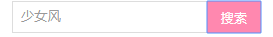

原文出处:本文由博客园博主印第安小铁匠提供。
原文连接:https://www.cnblogs.com/yangisme/p/11598613.html
原文连接:https://www.cnblogs.com/yangisme/p/11598613.html
最近利用Vue和element ui仿写了个小页面，记一哈分页和搜索功能的简单实现。
首页 emmmm.....
搜索框输入.....

搜索完成

数据是直接写在这里面的：
cardPhoto:[
{
name: '少女风十足！可爱萌妹子',
href: '/details',
img: require('@/assets/1/1.jpg'),
time: '2019-09-22',
},
.........
.........
.........
]element ui 中的分页
<!--分页-->
<div class="block">
<el-pagination
background
:current-page.sync="currentPage"
:page-sizes="[3, 6, 9, 12]"
:page-size="num"
layout="total, sizes, prev, pager, next, jumper"
:total="cardPhoto.length"
@size-change="handleSizeChange"
@current-change="handleCurrentChange">
</el-pagination>
</div>
data() {
return {
num: 3, //每页显示
currentPage: 1, //当前页
}
}
methods : {
//每页条数
handleSizeChange(val) {
this.num = val
},
//当前页
handleCurrentChange(val) {
this.currentPage = val
},}主页照片：
<div class="card"> <!--当前页-1*每页数，当前页*每页数-->
<div class="card-box" v-for="card in cardPhoto.slice((currentPage-1)*num, currentPage*num)" :key="card">
<div class="card-img">
<a href="javascript:void(0);" @click="routeGo(card)"><img :src="card.img" width="270px"/></a>
<div class="info">
<el-row><a href="javascript:void(0);" @click="routeGo(card)">{{card.name}}</a></el-row>
<time class="time">{{ card.time }}</time>
</div>
</div>
</div>
</div>实现分页的关键：
cardPhoto.slice((currentPage-1)*num, currentPage*num)
v-for对小盒子遍历时进行对应显示
slice()方法提取某个数组的一部分，并返回一个新的数组，且不会改动原数组比如当前页是第一页，每页仨数据，那就提取(1-1*3，1*3) => (0,3)也就是索引 0，1，2的数据
因为起止参数包括开始索引，不包括结束索引。
至此分页已成。，。
搜索栏：
<input class="seach-input" type="text" aria-placeholder="搜一搜，看一看" v-model="search"/>
<button class="search-btn" type="submit" @click="searchCont">搜索</button>别忘了在data() 下添加 search: ' ',
// 搜索
searchCont() {
var search = this.search
if(search) {
this.cardPhoto = this.cardPhoto.filter((cardPhoto) => {
return String(cardPhoto.name).indexOf(search) !== -1
})
}else {
history.go(0)
}
this.search = ''
},filert 把Array的某些元素过滤掉，然后返回剩下的元素。
具体去： https://www.liaoxuefeng.com/wiki/1022910821149312/1024327002617536
stringObject.indexOf( )
indexOf()返回（）中出现的位置，没有返回-1，所以 只输出 ！== -1的值，
输入cardPhoto.name里的值就可以搜索了，。，
具体去：https://www.w3school.com.cn/jsref/jsref_indexOf.asp
history.go(0) 输入框中空 点击搜索，页面刷新（这种方法不是太好，练习可用）
有不足和错误，请指正。
生命不息，折腾不止。
我就要这几个杯子里的中杯 -- ！
罗老师别这样 ！--